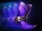
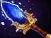
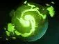
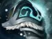
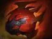

Gush
наносит урон, замедляет и уменьшает броню цели.

Хардлайн — позиция 3
выдерживать урон и начинать командные драки мощным ультимейтом.
добивай крипов с руки и способностями. Твоя главная ценность — не количество убийств, а хороший момент для командной драки.
наносит урон, замедляет и уменьшает броню цели.
блокирует часть входящего урона и помогает очищаться от некоторых эффектов.
наносит урон вокруг и уменьшает урон от атак врагов.
мощный массовый контроль, который оглушает врагов в большой области.





